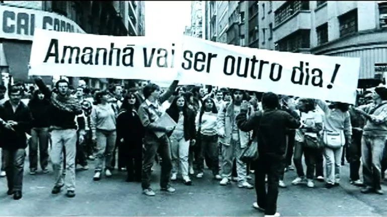
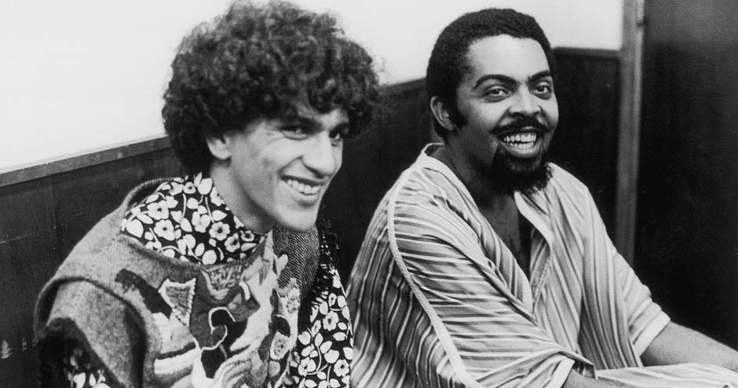

Em 1968, durante a ditadura militar brasileira, foi decretado o AI-5, que deu início ao período mais
restritivo e duro do regime. Entre as medidas adotadas, a censura da liberdade de expressão foi uma das mais
marcantes. Obras culturais, como filmes, livros e músicas, precisavam de uma aprovação prévia do governo para circularem.
Na lista a seguir, mostrarei 5 músicas censuradas durante o regime. Obviamente há inumeras obras censuradas nessa época, Rita Lee por exemplo, foi
uma das artistas mais censuradas na época da ditadura. Mas essa notícia é apenas uma brecha para que você se interesse pelo assunto e procure saber mais sobre.

Apesar de você (1970) – Chico Buarque
Chico Buarque é um dos artistas que teve muitas músicas censuradas. A princípio, sua canção Apesar de Você foi aprovada, até que o jornal Tribuna da Imprensa avaliou a composição como
um hino “jovem”. Assim, o significado foi percebido pelo regime.
Pra Não Dizer Que Não Falei das Flores (1968) – Geraldo Vandré
Pra Não Dizer Que Não Falei das Flores, de Geraldo Vandré, é um clássico entre as canções da época e se tornou um hino de resistência da oposição ao regime vigente. A música foi censurada por ser acusada de
“ofender” o exército.
O Bêbado e a Equilibrista (1979) – Elis Regina
O Bêbado e a Equilibrista, de Elis Regina, faz referência à perseguição contra os artistas, que, mesmo sabendo dos riscos, não
deixavam de disseminar a arte. Assim, a canção foi censurada por criticar o regime.
Ela Quer Morar Comigo na Lua (1982) – Blitz
A canção da Blitz foi censurada pelo uso da palavra “bundão”, que foi considerada inadequada numa época em que se preservava os “bons costumes”.
Hoje é Dia de El-Rey (1973) – Milton Nascimento
Hoje é Dia de El-Rey também foi uma canção censurada durante o período da Ditadura Militar por ter sido considerada como uma crítica ao regime.